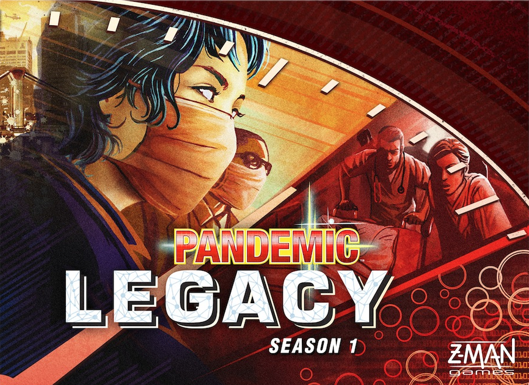
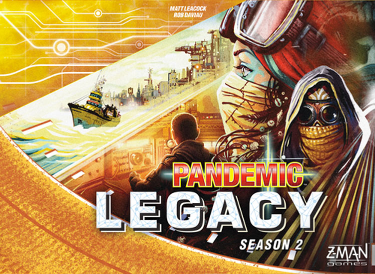

Season One
It starts simply. A virus tougher than the rest. Nothing your team can’t handle. But as January turns to February, things take a turn for the worse. This is no ordinary virus. What results is a year that will never be forgotten.
Pandemic Legacy: Season 1 is a unique and epic cooperative game where your decisions in one game carry over into future games. Over the course of the campaign, you will open sealed packets, reveal hidden information, and unlock secrets that will change your world in unexpected ways. Characters will gain scars, cities will panic, and diseases will mutate. Adapt to each new challenge and save humanity before it’s too late. The world will never be the same again.

Season Two
The world almost ended seventy-one years ago. A virulent plague came out of nowhere and ravaged the world. For three generations, small groups of survivors have struggled to keep the world alive. Operating from floating stations known as “havens,” they have maintained a loose network of the largest cities by delivering supplies to the mainland. But their efforts are no longer enough. Cities are falling off the grid and supplies are running low. The world needs a group of heroes to emerge and lead it through this crisis.
In Pandemic Legacy: Season 2, this task has fallen to you. You must reestablish supply lines and get the world back on its feet. Along the way, the decisions you make affect future games. As you play, you will unlock new components, make new discoveries about your world, and stumble upon secrets that could change the course of history. No matter what happens, though, the world is counting on you. You are humanity’s last chance.